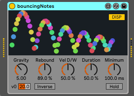
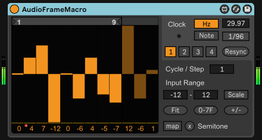
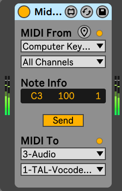

Max for Live デバイス
M4L開発者向け情報
Max やAbleton Live をお持ちでない場合でも、こちら からLive Suite のデモ版をダウンロードできます。コメント か何か でお知らせ頂けると助かります。
ALT-Synthdrum ダウンロード (maxforlive.com)
最終更新: 2020/5/2, version 1.1.0
シンプルでありがちなモノシンセドラムです。そうです、70年代シンセドラムにインスパイアされています。
使用例再生できない場合はこちら 。
特徴
擬似打撃音を再現しています。ATTACKダイヤルは時間ではなく強さになります。
強力なLFOとSWEEP機構をお楽しみください。
RC回路を模した矩形波を使用しています。ノコギリ波もあります。
既知の問題
LINEモードは遅延がありませんが、連続で発音するとクリップノイズが生じることがあります。
常に各波形の発振器 (VCO、LFO)、エンベロープ生成器分の負荷が発生します。
更新履歴
Version 1.1.0 の変更点 (2020/5/2)
Liveテーマ (スキン) に連動した配色に対応し、ダークテーマでの表示を改善しました…ん? LEDに何かあるかも…?
MODEボタン (ADSR/LINE) にオートメーションを設定していた場合、再生のたびに元に戻す履歴が作成される不具合を修正しました。
これらの変更に伴いオートメーションの順序に変更はありません。以前のバージョンを使用したLiveセットの互換性は問題ありません。
Version 1.0.7 の変更点 (2020/3/2)
Version 1.0.6 の変更点 (2019/3/2)
adsr~の再トリガー時の遅延を1msecにしました。これによりADSRモードの信頼性が向上したため、既定のMODEをADSRにしました。
冗長だった処理を見直し、アイドル中のCPU使用率を約9%削減しました。(Core i5-4570プロセッサーでCPU使用率1.47%から1.34%に改善)
矩形波のwavファイル作成に使ったものの、実際の処理には使用していなかった矩形波生成処理を削除しました。興味のある方はこちら 。
SENSEの変更が発音中に反映されない問題を修正しました。
OUTPUT、SENSE、およびSUSTAINを発音中に変更した場合にノイズが発生する問題を修正しました。
ADSRモードで発音中にSUSTAINを長くした場合に、変更前の時間で発音が途切れる問題を修正しました。
Version 1.0.0 : 初版 (2019/2/23)
製作にあたりSDS2002 (既にダウンロード不可) を大いに参考にさせて頂きました。開発されたTommy氏に感謝致します。
echo on noteoff ダウンロード (maxforlive.com)
最終更新: 2020/6/27, version 1.0.0
分散和音用の実験的なMIDIエフェクトです。
既知の問題
VSTiやMIDI音源によっては、連続して発音すると直前のMIDIノートのヴェロシティを引き継ぐため、
一度に30音以上同時発音すると、エコーが数ミリ秒ずつ遅れることがあります。
更新履歴
Version 1.0.0 の変更点 (2020/6/27)
よりArpeggiatorとの併用に特化したモードとして、新しく「Auto Stop」ボタンを追加しました。
エコーと同じノートオンを受信してもエコーが継続してしまい、新しいノートオンが正しく再生されない問題を修正しました。
エコーが無限に繰り返されるのを防ぐため、ノートオンヴェロシティ値の内部計算を浮動小数点で行うようにしました。
Version 0.71 の変更点 (2020/4/8)
Liveテーマ (スキン) に連動した配色に対応し、ダークテーマでの表示を改善しました。
Resetボタンをオートメーション、MIDIマッピングに対応するよう変更しました。副作用として、Resetボタンをたびに元に戻る履歴が作成されます。
Sync/Free 切り替えボタンにオートメーションを設定していると、再生の度に元に戻す履歴が作成されてしまう問題を修正しました。
Version 0.50 の変更点 (2019/10/14)
オートメーションの順序を見直しました。これにより、以前のバージョンを使用したLiveセットとは互換性がありません。
SyncモードでのDelay時間に無し (0) を指定できるようにしました。これによりDelay 時間指定の初期値をSyncモード、0にしました。
Version 0.30 : 初版 (2019/7/1)
bouncing notes  ダウンロード (maxforlive.com)
最終更新: 2021/2/23, version 1.1.0
ノートオンの間、ピンポン玉が跳ねるようにノートが生成されます。視覚的に効果が分かるようアニメーション窓が付いています。
既知の問題
ノートオンの間、Gravityなどパラメーターを変更しても次のバウンドが始まるまで変更が反映されません。
一度に大量のノートを演奏するとCPU使用率が上がることがあります。(後段のインストゥルメントによる場合もあります)
反転モードでボールがうまく描画されない場合があります。これは、元々ノートベロシティの最大を127と想定していましたが、反転モードでは際限なくベロシティが上がっていくためです。
更新履歴
Version 1.1.0 の変更点 (2021/2/23)
ついに、反転バウンドモードが追加されました。Inv.ボタンがオンの場合、バウンドが反転します。
初速度を調整できるVelocityパラメーターを追加しました。反転モードの場合Velocityの値を小さくすると効果的です。
Minimumパラメーターの初期値を100ミリ秒から50ミリ秒に変更しました。
これらの変更は以前のバージョンのデバイスを使ったLiveセットには影響しません。
バージョン表記をセマンティックバージョニングにしました。
Version 1.04 の変更点 (2020/3/23)
HOLDおよびDISPボタンの表示形式をlabelからdefaultに変更し、Max 8 でうまく表示されない問題を修正しました。
パラメータにオートメーションを設定した場合にCPU使用率が高くならないよう、オートメーションを遅延させる設定に変更しました。
アニメーション処理を見直し、パラメータ変更中の描画精度と、全体的なCPU使用率を少し改善しました。
Version 1.00 : 初版 (2020/3/21)
PitchW curve ダウンロード (maxforlive.com)
最終更新: 2020/5/27, version 1.0.0
ノートオンと連動してピッチベンドカーブを出力する簡素なMIDIエフェクトです。LAEX氏作の"PitchW ADSR" を元に、下記機能を追加しています。
ノートオンからピッチベンドカーブ開始までの遅延時間を設定できます。
ピッチベンド範囲を14bit精度の値で指定できます。(-8192から8191)
ピッチベンド変化は線形だけでなく指数および対数カーブにも対応しています。
左側の窓はピッチベンド値を表示し、上下の枠をドラッグすることでピッチベンド範囲を調整できます。
使用上の注意と既知の問題
ADSRの様に上がってまた戻るカーブには対応していません。オリジナル を試してみてください。
入力されたピッチベンドメッセージはすべて無視されます。
ピッチベンドメッセージは1ミリ秒ごとに出力されます。
Shift+ドラッグでピッチベンドカーブの範囲を微調整することができますが、マウスポインタの位置はデバイスの表示範囲に留まりません。
Max 6では、デバイスをMIDIトラックに新規追加した際に「To」の値が0で表示されますが実際には表示窓のとおり-8192として動作します。
更新履歴
Version 1.2.0 の変更点 (2021/10/30)
ピッチベンド表示窓の上下の枠をドラッグすることで、ピッチベンドカーブの範囲を指定できるようになりました。Shift+ドラッグで微調整も可能です。
「Interval」でピッチベンドメッセージの送信感覚を調整できるようになりました。
デバイスが非アクティブになった時にピッチベンドカーブを停止し、再度アクティブになったあとカーブが継続しないようにしました。
その他UIいろいろ調整しました。
これらの変更は、前バージョンのデバイスを使用しているLiveセットには影響しません。
Version 1.0.0 : 初版 (2020/5/27)
Audio Frame Macro ダウンロード (maxforlive.com)
最終更新: 2021/5/11, version 1.3.1
PALやNTSCの様なフレームレートで、整数値のパラメーターを粗い解像度で変化させるオーディオエフェクトです。
特徴
インストゥルメントデバイスやプラグインのキーシフト、オクターブシフト、波形選択など整数値のパラメーターを調整しやすいよう設計されています。
小数値のパラメーターに対して、スケーリングした値でモジュレーションをかけることも可能です。
4つの独立したモジュレーションに対して別なパラメーターを割り当てることができ、各モジュレーションはデバイスのマスタークロックに同期します。
既知の問題
Clockの周期は、モジュレーションさせるデバイスやLive自体の内部バッファによって、実際の周期とは完全に一致しません。(サンプリング周波数44.1kHzで10～20数サンプル程の誤差)
音量など、値が変化してから数ミリ秒かけて連続的に動作するパラメーターでは、段階的に変化する効果が得られない場合があります。
スケーリングしない場合、変化できる最大値は絶対値で128です。十分と考えられますが、これを超える値を持つパラメーターは変化させられません。
Resyncボタンにもオートメーションが設定可能ですが、副作用としてボタンを押すたびに元に戻す履歴が作成されます。
スライダーの下に表示される数値はInput Rangeで指定された範囲を超えることがありますが、モジュレーションに用いられる値はInput Range の範囲に絞られます。
更新履歴
Version 1.3.1 の変更点 (2021/5/11)
ループ開始地点より前のスライダーが暗く表示され有効でないように見える問題を修正しました。
スライダーの下に表示される数値について、-100以下の場合に正しく表示されない問題を修正しました。
Version 1.3.0 の変更点 (2021/2/26)
デバイスをMIDIトラックのMIDI出力先 (MIDI To) に指定できるよう対応しました。(Live 11.0以降のみ) ノートオン受信時に、Resyncボタンを押した時の様にモジュレーションが最初に戻るようになります。
ループ開始・終了地点やオートメーションが設定されているスライダー以外のスライダーの値を変更するとオートメーションが取り消されてしまう場合がある問題を修正しました。
状況によってMapボタン押下してパラメーターを選択しても指定されない場合がある問題を修正しました。
オートメーションの表示順を見直しました。この変更は以前のバージョンを使用したLiveセットには影響しません。
Version 1.2.1 の変更点 (2020/12/13)
Live標準のループセレクターを追加し、ループ開始地点を指定できるようになりました。ループの開始・終了地点にもオートメーションを設定できます。
Resyncボタンを押した際にマスタークロックの位相を初期化することで、最初のフレームが正しい長さでモジュレーションされるようになりました。
ループ開始・終了地点やオートメーションが設定されているスライダー以外のスライダーの値を変更するとオートメーションが取り消されてしまう場合がある問題を修正しました。
Version 1.0.0 : 初版 (2020/11/8)
MIDI Frame Macro ダウンロード (maxforlive.com)
最終更新: 2021/5/11, version 1.3.1
PALやNTSCの様なフレームレートで、整数値のパラメーターを粗い解像度で変化させるMIDIエフェクトです。
特徴
Audio Frame Macroに加えて、各モジュレーションはノートオンで最初のフレームから同期して始まります。
既知の問題
多くのインストゥルメントデバイスは、クリップノイズを発生させないようにノートオンから数ミリ秒遅れて発音します。そのため最初の数フレームの効果は短くなります。
Clockの周期は、変化させるデバイスやLive自体の内部バッファによって、実際の変化周期とは完全に一致しません。
数ミリ秒かけて連続的に変化するパラメーターに対しては、段階的に変化する効果が得られない場合があります。
スケーリングしない場合、変化できる最大値は絶対値で128です。十分と考えられますが、これを超える値を持つパラメーターは変化させられません。
更新履歴
Version 1.3.1 の変更点 (2021/5/11)
ループ開始地点より前のスライダーが暗く表示され有効でないように見える問題を修正しました。
スライダーの下に表示される数値について、-100以下の場合に正しく表示されない問題を修正しました。
バージョン番号を派生元デバイスのAudioFrameMacroに合わせました。
Version 1.0.2 の変更点 (2021/2/27)
状況によってMapボタン押下してパラメーターを選択しても指定されない場合がある問題を修正しました。
Version 1.0.1 の変更点 (2020/12/13)
ループ開始・終了地点やオートメーションが設定されているスライダー以外のスライダーの値を変更するとオートメーションが取り消されたり、正しくモジュレーションされない場合がある問題を修正しました。
Version 1.0.0 : 初版 (2020/12/6)
Retro-nome ダウンロード (maxforlive.com)
最終更新: 2021/11/13, version 1.0.1
テンポ同期を支援する視覚エフェクトです。変更できるパラメーターはありません。
既知の問題
Liveセットで拍子変更記号が指定されている場合、小節数と拍数が正しく表示されない場合があります。
1万小節以降は小節数が正しく表示されません。
更新履歴
Version 1.0.1 の変更点 (2021/11/13)
描画処理をlcdからjsuiに刷新しました。速いテンポでの描画が改善しCPU使用率が低下しました。
Version 1.0.0 : 初版 (2020/11/22)
Audio ADSR ダウンロード (maxforlive.com)
最終更新: 2021/8/7, version 1.0.0
オーディオトラックで使用できる、超シンプルなADSRエンベローパーです。
既知の問題
MIDI入力のタイプやチャンネルを続けて変更し元に戻した際、プルダウンリストが余計に元に戻ってしまう場合があります。
MIDI Router ダウンロード (maxforlive.com)
最終更新: 2021/8/7, version 1.0.0
オーディオトラック上でオーディオエフェクトデバイスやプラグインのMIDIルーティングを行えるデバイスです。
既知の問題
MIDI入力のタイプやチャンネルを続けて変更し元に戻した際、プルダウンリストが余計に元に戻ってしまう場合があります。
戻る